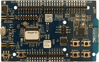
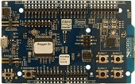

nrf51x, nrf52x開発環境
開発ボード
| 開発ボード型番 | ボード情報 | 写真 |
| -- | -- |
| PCA10001 | DevZone |  |
| PCA10028 | DevZone ||
| PCA10036 | DevZone |
|
| PCA10028 | DevZone ||
| PCA10036 | DevZone | |
|
開発環境(Nordic系)
nRF51822の開発環境構築について。
Windows編(標準環境)とMac(GCC)について説明します。 もちろんMac以外でGCC環境でやることも可能です。
Windows編
開発に関しては色々便利＆簡単。 ただし開発環境(IDE)が有料になる。 無料で使う場合はコードサイズが32k制限。
環境構築手順
ここからダウンロード＆インストール。これが32k制限あり。
-
SDK
https://www.nordicsemi.com/eng/Products/Bluetooth-R-low-energy/nRF51822 -
SDK(旧バージョン)
http://developer.nordicsemi.com/
ここから「nRF518-SDK」をダウンロード＆インストール。 ダウンロードにはシリアルナンバーが必要。
- JLink
https://www.segger.com/jlink-software.html
ここからダウンロード＆インストール。ボード上のSEGGERチップに書いてある番号が必要。
ビルド＆実行
C:\Nordic Semiconductor\nRF51 SDK_v5.2.0.39364\Nordic\nrf51822\Board\pca10001\blinky_example\arm\blinky.uvproj
を開いて実行。LEDがチカチカすれば成功。
BLEスタック
スタックを別で書き込まないとBLEとして動作しないです。 https://www.nordicsemi.com/eng/Products/Bluetooth-R-low-energy/nRF51822
ここから「nRFgo Studio」と「S110-SD-v6」をダウンロード。 「nRFgo Studio」をインストール。「S110-SD-v6」は展開して適当なフォルダへ。 S110がペリフェラル用BLEスタックでnRFgoがROM書きツールになります。 nRFgoで「Program SoftDevice」からS110内のhexファイルを選択してProgram。 その後、プログラム部分を書き込む。例えば、
C:\Nordic Semiconductor\nRF51 SDK_v5.2.0.39364\Nordic\nrf51822\Board\pca10001\s110\ble_app_beacon\arm\ble_app_beacon.uvproj
を書き込めばiBeaconとして動きます。
Mac編
Makeファイルの作成など不便な点が多い。 コードサイズの上限は無い。Mac上で開発＆書き込みが出来る。
環境構築手順
ここから「nRF51-SDK-zip」と「S110-SD-v6」をダウンロード。
ここからダウンロード＆インストール。ボード上のSEGGERチップに書いてある番号が必要。 Xcodeコマンドラインツール ターミナルで以下のコマンドを実行する。
xcode-select --install
ここからMac用をDLし適当な場所に展開。
- ビルド
[sdk]/nrf51_sdk/nrf51822/Source/templates/gcc 内にMakefile.macを作成し以下の内容を記述。
1 2 3 | GNU_INSTALL_ROOT := [インストールした場所]/gcc-arm-none-eabi GNU_VERSION := 4.8 GNU_PREFIX := arm-none-eabi |
Makefile.commonの9行目付近を以下のように修正。
1 2 3 4 5 6 | #ifeq ($(OS),Windows_NT) #include $(TEMPLATE_PATH)Makefile.windows #else #include $(TEMPLATE_PATH)Makefile.posix #endif include $(TEMPLATE_PATH)Makefile.mac |
後は、例えば下記フォルダ内でMakeを実行すると_buildファイル内にbinファイルができる。
1 | [sdk]/nrf51_sdk/nrf51822/Board/pca10001/blinky_example/gcc |
- 書き込み ターミナルでJLinkを操作してビルドで生成したbinファイルを書き込む。 下記のようにコマンドを実行すれば書き込まれるはずです。
J-Link接続
1 2 3 4 5 6 7 8 9 10 11 12 13 14 15 16 | $ JLinkExe -Device nrf51822 -if SWD SEGGER J-Link Commander V4.84 ('?' for help) Compiled Mar 28 2014 16:35:14 Info: Device "NRF51822_XXAA" selected (257 KB flash, 16 KB RAM). DLL version V4.84, compiled Mar 28 2014 16:35:10 Firmware: J-Link OB-SAM3U128 V1 compiled Dec 11 2013 20:20:11 Hardware: V1.00 S/N: 480203827 VTarget = 3.300V Info: Found SWD-DP with ID 0x0BB11477 Info: Found Cortex-M0 r0p0, Little endian. Info: FPUnit: 4 code (BP) slots and 0 literal slots Found 1 JTAG device, Total IRLen = 4: Cortex-M0 identified. Target interface speed: 100 kHz J-Link> |
転送
1 | J-Link>loadbin _build/blinky_gcc_xxaa.bin 0x0 |
終了
1 | J-Link>q |
ちなみにS110を書き込んである場合は0x0を0x14000に変更してください。
コマンド集
デバイスの設定
1 | device nrf51822 |
スピードの設定
1 | speed 1000 |
Flash全体の削除
1 2 3 4 | w4 4001e504 2 w4 4001e50c 1 w4 4001e514 1 r |
Flashに書き込めるようにする
1 | w4 4001e504 1 |
おまけ
VTarget = 0.000Vだと基板に電源はいっていない
1 2 3 4 5 6 7 8 9 10 11 12 | J-Link>q
akira-air:gcc akira$ JLinkExe -Device nrf51822 -if SWD
SEGGER J-Link Commander V4.84 ('?' for help)
Compiled Mar 28 2014 16:35:14
Info: Device "NRF51822_XXAA" selected (257 KB flash, 16 KB RAM).
DLL version V4.84, compiled Mar 28 2014 16:35:10
Firmware: J-Link Lite-Cortex-M V8 compiled Aug 29 2012 15:24:23
Hardware: V8.00
S/N: 518005916
Feature(s): GDB
VTarget = 0.000V
J-Link>
|
PCA10001では一度、認識しなくなると、再起動が必要になる。
0x00014000ではうまくいく
1 2 3 4 5 | J-Link>loadbin _build/blinky_gcc_xxaa.bin 0x00014000 Downloading file... [_build/blinky_gcc_xxaa.bin] Info: J-Link: Flash download: Flash programming performed for 1 range (3072 bytes) Info: J-Link: Flash download: Total time needed: 1.661s (Prepare: 0.759s, Compare: 0.010s, Erase: 0.000s, Program: 0.570s, Verify: 0.004s, Restore: 0.315s) J-Link> |
1 | Hello NRF51822 |
1 2 3 4 5 6 7 8 9 10 11 12 13 14 15 16 17 18 19 20 21 22 23 24 25 26 27 28 29 | #include <stdbool.h> #include <stdint.h> #include "nrf_delay.h" #include "nrf_gpio.h" #include "boards.h" /** * @brief Function for application main entry. */ int main(void) { // Configure LED-pins as outputs nrf_gpio_cfg_output(LED_0); nrf_gpio_cfg_output(LED_1); // LED 0 and LED 1 blink alternately. while(true) { nrf_gpio_pin_clear(LED_0); nrf_gpio_pin_set(LED_1); nrf_delay_ms(500); nrf_gpio_pin_clear(LED_1); nrf_gpio_pin_set(LED_0); nrf_delay_ms(500); } } |
SPI Pin
PCA10001
1 2 3 4 | #define SPIS_MISO_PIN 20 // SPI MISO signal. #define SPIS_CSN_PIN 21 // SPI CSN signal. #define SPIS_MOSI_PIN 22 // SPI MOSI signal. #define SPIS_SCK_PIN 23 // SPI SCK signal. |
PCA10028
1 2 3 4 | #define SPIS_MISO_PIN 28 // SPI MISO signal. #define SPIS_CSN_PIN 12 // SPI CSN signal. #define SPIS_MOSI_PIN 25 // SPI MOSI signal. #define SPIS_SCK_PIN 29 // SPI SCK signal. |
LED Pin
PCA10001
1 2 3 4 | #define LED_START 18 #define LED_0 18 #define LED_1 19 #define LED_STOP 19 |
PCA10028
1 2 3 4 5 6 | #define LED_START 21 #define LED_1 21 #define LED_2 22 #define LED_3 23 #define LED_4 24 #define LED_STOP 24 |
URAT Pin
PCA10001
1 2 | #define RX_PIN_NUMBER 11 #define TX_PIN_NUMBER 9 |
PCA10028
1 2 | #define RX_PIN_NUMBER 11 #define TX_PIN_NUMBER 9 |